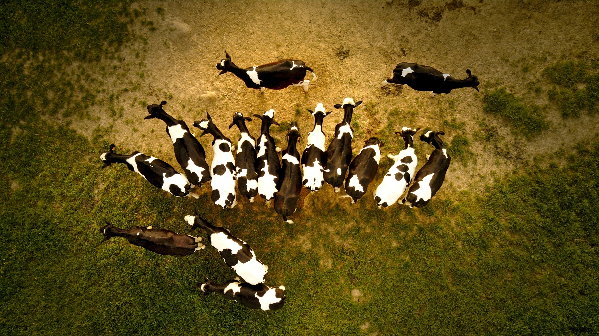

Value Addition is the Way
IN Uganda, the majority of agricultural commodities are marketed in their raw forms, hence
losing the opportunities for higher earnings and generating employment.
According to a World Bank Report (2012), the value of Uganda’s value added products in 2011
was standing at $3,870,911,000, while that of Tanzania stood at $5,780,320,210. In the East African region,
Kenya has the highest agricultural value added standing at $8,346,408,890 in 2011.
The main constraints that face Uganda’s agro processing industry include among others,
the high operational costs mainly due to the high prices of imported fuel and spare parts,
unavailability of appropriate processing machines and spare parts, and the limited knowledge in
operation of the machines.
However, despite these constraints, agro processing has a tremendous potential for increasing
income through value addition and increasing shelf life and access to food security through the
establishment of small scale agro processing enterprises and rural based industries.
Once these commercial agro industries are efficiently run and are responsive to the ever-changing market
demands, this will be a precursor for overall economic growth of the country.
Value addition is the process of changing or transforming a product from its original state to a
more valuable state. Value addition also is simply the act of adding value to a product,
whether you have grown the initial product or not. It involves taking any product from one level to the next.
For farmers in Uganda, value addition has a particular importance in that it offers a
strategy for transforming an unprofitable enterprise into a profitable one. In fact,
there are very few items that a Ugandan small holder farmer can produce and sell profitably at
the first level (that is, on the open wholesale market).
Therefore, a value-addition strategy is critical to the long-term survival of most small farms in Uganda.
A good example is say, a coffee farmer who simply grows and harvest coffee cherries, and then sell them “as is” to a local processor. Here, they usually sell at a price below the cost of production. This marketing strategy may be viable in the short run, because it may cover the cash costs involved in producing the crops. This is, however, a poor strategy because it usually does not cover the total costs of production, and, therefore, the coffee enterprises will not be sustainable.
In conclusion, for those in agribusiness, as markets become more competitive, it is important for
mainly small holder farmers and other value chain actors to seek ways of taking advantage of the value
adding opportunities to be able to increase the incomes of the rural producers.
Deliberate efforts should be put in place in establishing market research teams to help in
investigating both fresh and processed markets. The value added products can be those that are traditional
or those that already exist in the rural areas, or can also be new products, which can be processed using new,
low cost technologies.
Popular Posts
-

Cattle Hit by Anthrax
Farmers Loose Thousands -
 Coffee Market Boom
Coffee Market Boom
Check out these mouth-watering prices -
Value Addition is the Way
See how adding Value to Vegetable will yield your profits.
Tags
News Tools Market Cattle Seminars MOA Presdiential Initiative News Exports Imports Others